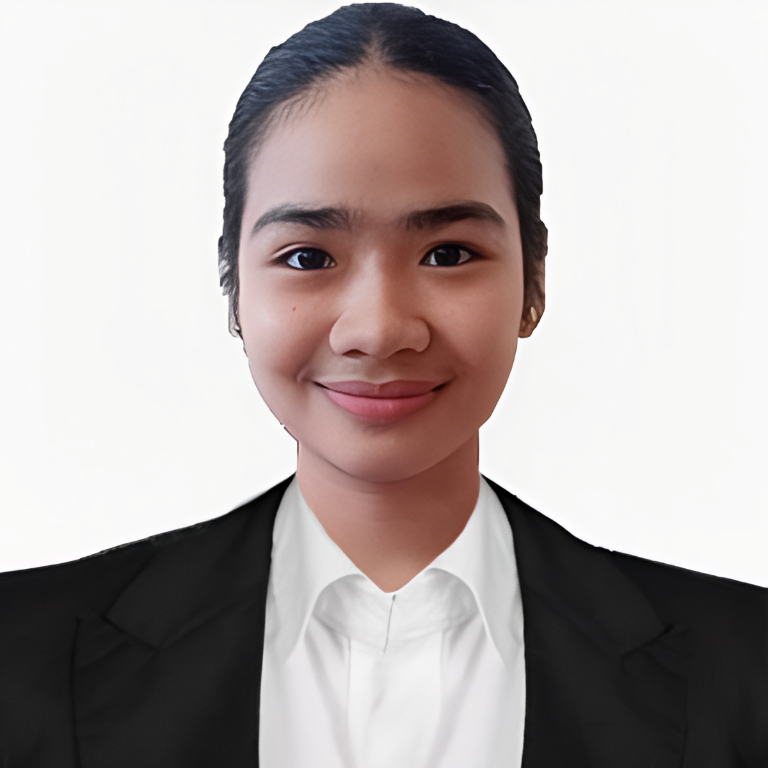
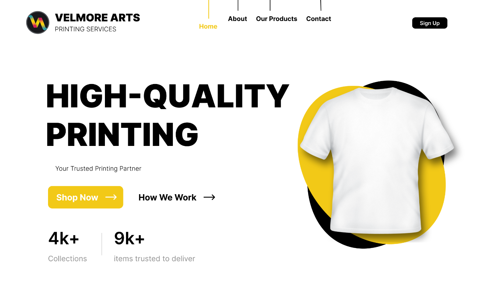

UI/UX · SYSTEM DESIGN
Order & Production Management System
Led UI/UX design for an order and production management system, creating wireframes, screen layouts, and user-friendly workflows.

Stella Serinio Let’s connectHi, I’m Stella — an Information Technology student interested in creating clear, user-friendly interfaces and thoughtful digital workflows.
These projects gave me opportunities to plan interfaces, map workflows, and collaborate during system development.
Led UI/UX design for an order and production management system, creating wireframes, screen layouts, and user-friendly workflows.
Designed and implemented an enrollment system with student enrollment and schedule viewing, plus administrative tools for applications and class schedules.
Led interface design and development, planned system workflows, and created screen prototypes focused on usability and efficiency.
I’m building my skills at the intersection of design and technology, with a focus on making systems feel more intuitive to use.
I’m Stella Marie Serinio, a Bachelor of Science in Information Technology student at Cebu Technological University – Main Campus. Through academic projects, I’ve worked on interface design, wireframes, screen layouts, and system workflows while collaborating with teammates during implementation.
I’m eager to keep learning, take feedback constructively, and contribute to a team that values useful, user-centered digital experiences.
Wireframing · Screen layouts · User workflows · Interface design · Prototypes
HTML/CSS · C# · Java · Python · PostgreSQL
Communication · Team collaboration · Willingness to learn
Basic office tools · Academic project documentation
I’d be happy to connect, learn more about your team, and discuss how I can contribute while continuing to grow as a designer.
